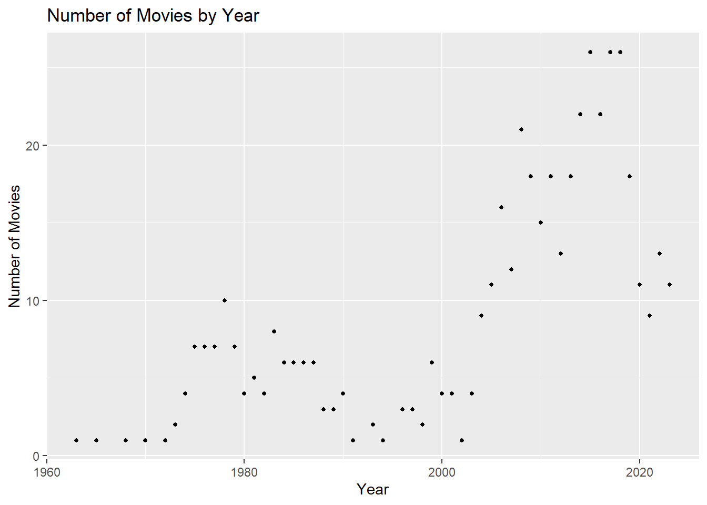

I think it would be disrespectful to criticize that movies. Each of them starred cult actors and actresses who have contributed to Turkish cinema for years. Maybe the only comment we can make is the type of second “movie”. As you know, it’s not a movie, it’s recorded stand-up show, but of course it does not doesn’t change the fact that it is one of the best examples of its kind.
title year duration rating vote
189 Cumali Ceber 2 2018 100 1.2 10230
199 Müjde 2022 48 1.2 9919
245 15/07 Safak Vakti 2021 95 1.2 20608
101 Cumali Ceber: Allah Seni Alsin 2017 100 1.0 39269
150 Reis 2017 108 1.0 73974
Actually, I do not have a specific comment for that movies. Especially for some of them. I don’t want to get in trouble :D
movies_df %>%filter(title =="Aile Arasinda"| title =="Babam ve Oglum"| title =="G.O.R.A."| title =="Pek Yakinda"| title =="Beyaz Melek") %>%arrange(desc(rating))
title year duration rating vote
1 Babam ve Oglum 2005 108 8.2 91035
2 G.O.R.A. 2004 127 8.0 66033
3 Aile Arasinda 2017 124 7.6 25666
4 Pek Yakinda 2014 134 7.3 35455
5 Beyaz Melek 2007 115 6.5 7338
Since I had to choose 5 movies, these are the first ones that come to my mind. I cannot say that they’re my favorites. To comment: Babam ve Oglum is a really emotional movie, as you know. I cryevery time I watched it, especially in one scene. You know that scene… If I need to comment about the Aile Arasinda: As a person who watched everything produced by Gulse Birsel, it is a comedy movie that I love very much. Finally, Beyaz Melek is a movie I watched in my childhood and I think a child should not watch it. It can cause a kind of trauma. Fortunatelly, it didn’t happen to me.
c) Number of Movies by Years
movie_count_by_year <- movies_df %>%group_by(year) %>%summarise(count =n())ggplot(movie_count_by_year, aes(x = year, y = count)) +geom_point(size =1) +labs(title ="Number of Movies by Year", x ="Year", y ="Number of Movies")

As you can see, number of movies produces significantly increased in last 20 years. Some of the reasons for this may be competition in the sector, digitalization and globalization in the media.
Average Ratings by Years
ratings_by_year <- movies_df %>%group_by(year) %>%summarise(average_rating =mean(rating))ggplot(ratings_by_year, aes(x = year, y = average_rating)) +geom_point(size =1) +labs(title ="Average Ratings by Year", x ="Year", y ="Average Rating")
As you can see, we are facing with an interesting result. I just mentioned that the number of movies by years increased, and we talked about some reasons for that. In this graph, we also can see some results of that reasons. The increasing number of movies have clearly reduced the ratings.
d) Correlation between Votes and Ratings
ggplot(movies_df, aes(x = vote, y = rating)) +geom_point() +labs(x ="Votes", y ="Ratings")
To be honest, I do not have an idea why the graph looks like that. Maybe only comment I can say that highly liked and hated movies unite society and increase the number of votes.
Correlation between Duration and Rating
ggplot(movies_df, aes(x = duration, y = rating)) +geom_point() +labs(x ="Duration (minutes)", y ="Rating")
In that graph, we see that the distribution of movie durations is generally of a similar value. But I cannot say any relationship between rating and duration.
title_new year_new
1 Yedinci Kogustaki Mucize 2019
2 Kis Uykusu 2014
3 Nefes: Vatan Sagolsun 2009
4 Ayla: The Daughter of War 2017
5 Babam ve Oglum 2005
6 Ahlat Agaci 2018
7 Bir Zamanlar Anadolu'da 2011
8 Eskiya 1996
9 G.O.R.A. 2004
10 Vizontele 2001
11 Her Sey Çok Güzel Olacak 1998
Join Operations with Initial Dataframe
library(dplyr)result_df <-left_join(movies_df_new, movies_df, by =c("title_new"="title"))print(result_df)
title_new year_new year duration rating vote
1 Yedinci Kogustaki Mucize 2019 2019 132 8.2 54171
2 Kis Uykusu 2014 2014 196 8.0 54646
3 Nefes: Vatan Sagolsun 2009 2009 128 8.0 35022
4 Ayla: The Daughter of War 2017 2017 125 8.3 42992
5 Babam ve Oglum 2005 2005 108 8.2 91035
6 Ahlat Agaci 2018 2018 188 8.0 27015
7 Bir Zamanlar Anadolu'da 2011 2011 157 7.8 49365
8 Eskiya 1996 1996 128 8.1 71704
9 G.O.R.A. 2004 2004 127 8.0 66033
10 Vizontele 2001 2001 110 8.0 38403
11 Her Sey Çok Güzel Olacak 1998 1998 107 8.1 27122
In some parts of my codelines, I got help from AI and several websites. To explain them, to use use stringr package I reviewed some websites to learn which functions it have, and how I can use them. Finally, with AI I gave my codelines to ChatGPT and Bing Copilot, and asked for help on how to combine them (For example: Duration operations, and using stringr package functions to do string processing in that codelines).